第 2 章 概率分布及其用途#
本章解决：手里只有 \(U(0,1)\) 均匀随机数（第 1 章 §1.3 的产物），怎么把它变成任意目标分布的样本？本章是抽样技术总汇，五大招依次登场：cdf 反演（§2.1、§2.5）、模拟/复合（§2.3–2.4、§2.9）、变换（§2.5.3）、拒绝采样（§2.8）、以及 Walker alias（§2.2）与联合分布抽样（§2.10）两个专题；途中把二项、泊松、指数、柯西、正态、对数正态、beta、gamma 八大分布的密度、均值、方差全部推导一遍（概率论复习重点章），并以中心极限定理收束出"蒙特卡罗误差棒"的通用流程（§2.6.3）。 对照教材：Shonkwiler & Mendivil《Explorations in Monte Carlo Methods》第 2 章（pp.47–102，§2.1–2.10，公式编号 (2.1)–(2.30) 与笔记一致）。补充：Dunn & Shultis §2–§5（连续/离散随机变量、正态抽样、随机向量——与本章逐节对应，可交叉阅读）。
| 关键词 | 事实 |
|---|---|
| 五大抽样技术 | cdf 反演、模拟、复合（composition）、变换（transformation）、拒绝（rejection） |
| cdf 反演（连续） | \(X=F^{-1}(U)\)，Theorem 2.1；通用式 \(X=\inf\{\xi:F(\xi)\ge U\}\) |
| Walker alias | 预处理 \(O(n)\)，采样 \(O(1)\)（无搜索循环） |
| Poisson 极限 | 二项 \(b(n,\lambda t/n)\xrightarrow{n\to\infty}\) Poisson(\(\lambda t\))，式 (2.9) |
| 指数 = 首事件等待时间 | 无记忆性（Markovian）；cdf 反演 \(W=-\ln(1-U)/\lambda\) |
| Box–Muller | \(\cos(2\pi U_1)\sqrt{-2\ln U_2}\) 精确产生独立 \(N(0,1)\) 对 |
| 拒绝采样效率 | \(1/M\)（每 \(M\) 个提案中 1 个），\(M\) 要小 |
| MC 误差棒 | batching + Student-\(t\)：\(\hat\theta\pm t_\alpha\, s_B/\sqrt m\)，式 (2.21) |
本章代码：nb/ch02.ipynb（种子 2025）。13 个实验：离散 cdf 反演与重排序加速、Walker alias 构造与验收、二项两法对比、泊松三路近似、指数反演与无记忆性、柯西重尾、CLT 三法抽样（Box–Muller 证明配套）、batching 置信区间覆盖率、Gibrat 对数正态、拒绝采样 Be(2,3)、无界 beta、gamma 两段式、三角形联合分布。
实验索引
| # | 实验 | 书节 | 产出图 |
|---|---|---|---|
| 1 | 离散 cdf 反演 + 重排序加速 | §2.1.2 | out-2-1.png |
| 2 | Walker alias 构造与验收 | §2.2 | out-2-2.png |
| 3 | 二项两法抽样 | §2.3 | out-2-3.png |
| 4 | 泊松乘积法 + 二项近似三路 | §2.4 | out-2-4.png |
| 5 | 指数反演 + 无记忆性 | §2.5 | out-2-5.png |
| 6 | 柯西重尾 | §2.5.3 | out-2-6.png |
| 7 | 正态抽样三法 | §2.6.1 | out-2-7.png |
| 8 | batching 覆盖率 | §2.6.3 | out-2-8.png |
| 9 | Gibrat / 对数正态 | §2.7 | out-2-9.png |
| 10 | 拒绝采样 Be(2,3) | §2.8.2 | out-2-10.png |
| 11 | 无界 beta | §2.8.3 | out-2-11.png |
| 12 | gamma 缝合法 + Erlang | §2.9.2 | out-2-12.png |
| 13 | 三角形联合分布 | §2.10 | out-2-13.png |
2.0 本章导图#
本章立场（书原话）：现代数值软件都有现成抽样 API，鼓励使用；但仍然手写每个算法——因为技术本身有教益，且偶尔 API 缺失或需要验证时用得上。
2.1 cdf 反演——离散情形：伯努利试验（CDF Inversion–Discrete Case: Bernoulli Trials）#
伯努利试验（Bernoulli trial）：只有两个结果的实验（失败/成功、0/1）。成功概率 \(p\)、失败概率 \(q=1-p\)。pdf 与 cdf（0 记失败、1 记成功）：
均值与方差（式 (1.15)(1.16) 直接代入）：\(\mu=0\cdot(1-p)+1\cdot p=p\)；
2.1.1 两结果 cdf 反演（Two-Outcome CDF Inversion）#
抽伯努利样本 \(T\) 只需一个 \(U\sim U(0,1)\)：\(U<p\) 判成功。合法性：
例（轮盘赌）：38 格中 18 红 18 黑 2 绿，"红"概率 \(p=18/38=0.4736\dots\)；生成 \(U\)，\(U<0.4736\dots\) 即"红"。等价地用 cdf 图像读：\(U<q\) 返回 0（非红）、\(U\ge 1-p\) 返回 1（红）——书 Fig 2.1。
2.1.2 多结果分布（Multiple-Outcome Distributions）#
多结果离散分布的 cdf 反演 = 把 \([0,1]\) 切成与概率成比例的断点区间，看 \(U\) 落在哪段。书例（岸鸟每窝产卵数）：\(\Pr(X=2,3,4,5)=0.15,0.20,0.60,0.05\)。从 \((0,U)\) 出发水平右行，遇到 cdf 跳变（竖直虚线段）就下落到 \(x\) 轴取值——"2"以 0.15 概率被选中，依此类推。这叫反转 cdf（inverting the cdf）。
书 Alg 2.1（断点搜索法）：断点 \(\mathrm{bp}[i]=\mathrm{bp}[i-1]+\mathrm{op}[i]\)，\(U\ge\mathrm{bp}[k]\) 就推进 \(k\)。缺点：每个样本都要走 while 循环。加速技巧：按概率降序重排结果——期望循环次数从
两个更快变体：
- 轮盘赌表（roulette wheel selection，Alg 2.2）：概率是简单两位小数时，造长度 100 的数组按比例填充各结果，采样只需
rv[random.randint(0,99)]——一次随机数、一次下标，无循环。 - 向量化（Alg 2.3）：断点 \(\mathrm{bp}=[0.15,0.35,0.75,0.85,1.0]\)，对 10000 个 \(U\) 做布尔掩码 \(w_2=(u<\mathrm{bp}[0])\cdot 2\)、\(w_3=((u\ge\mathrm{bp}[0])\,\&\,(u<\mathrm{bp}[1]))\cdot 3\)……逐项相加，每个分量恰有一个非零加数。
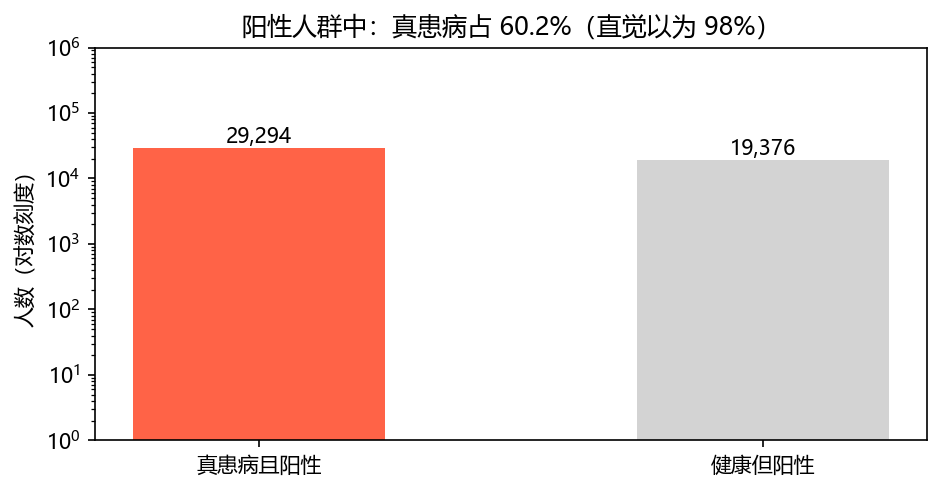
2.2 Walker 的 Alias 方法（Walker's Alias Method）#
动机：cdf 反演要搜索；alias 法预处理费一点、采样零搜索——正是轮盘赌的数学化：\(n\) 个结果像 \(n\) 个扇区（中心角 \(p_i2\pi\)），把"不足的扇区"从"超额的扇区"借概率补齐，使每个扇区都恰好 \(1/n\)。
数据结构：两个数组——概率调整表 \(Q[\cdot]\) 与别名表 \(A[\cdot]\)。
采样算法（两行）：
- 取 \(U\sim U(0,1)\)，令 \(Y=\operatorname{int}(Un)\)（整数部分，等可能选中 \(0,\dots,n-1\) 之一），\(Z=\operatorname{frac}(Un)\)（小数部分）；
- 若 \(Z<Q[Y]\) 返回 \(Y\)，否则返回 \(A[Y]\)。
原书笔误
书印的判据是 "if \(Q[Y]<Z\) return \(Y\)"，与其自身构造矛盾：满扇区 \(Q[6]=1.0\)、别名表 \(A[6]=-\)（无需别名），若按书印条件则 \(Q[6]<Z\) 永假、必然访问未定义的 \(A[6]\)；且对 \(Q[1]=0.18\)（即 \(n p_1\)）书印条件给 \(Y\) 的自留概率 \(0.82/n\neq p_1/n\)。正确判据是 \(Z<Q[Y]\)（\(Y\) 以 \(Q[Y]/n\) 自留、\(A[Y]\) 以 \((1-Q[Y])/n\) 被转投），与书正文"if 子句以概率 \(Q[Y]\) 成功"的解释一致。
书例（一窝 8 只的雌雏数分布，Table 2.1：\(\Pr(0,\dots,8)=0.02,0.04,0.08,0.15,0.2,0.21,0.16,0.09,0.05\)）构造出的表：
（书正文用 1 基下标叙述："t=1、\(p_t=0.02\)" 指 0 基的第 0 号结果；Python 实现（0 基）时 A 数组为书值减 1，Q 数值序列逐项相同——实验 2 已逐项验证。）
为什么对：\(Y\) 在 \(\{0,\dots,n-1\}\) 上均匀（各 \(1/n\)）；\(Z\) 与 \(Y\) 独立且 \(Z\sim U(0,1)\)（\([Y,Y+1)\) 的子区间对每个 \(Y\) 结构相同）。于是 \(Y\) 以概率 \(Q[Y]/n\) 被返回、\(A[Y]\) 以概率 \((1-Q[Y])/n\) 被返回——只要 \(Q,A\) 构造得当，总概率恰好凑成 \(p_i\)。
构造（归纳法）：均匀扇区大小 \(S=1/n\)。任取概率不足的指标 \(t\)（\(p_t<S\)）与超额的指标 \(p\)（\(p_p>S\)）：置 \(Q[t]=p_t\)、\(A[t]=p\)——把 \(t\) 的整个扇区填满，缺口 \((S-p_t)\) 由 \(p\) 支付；\(p\) 的剩余概率按 \(S-p_t\) 扣减。\(t\) 退出舞台，对剩下的重复（剩余总概率恰为 \((n-1)S\)）。全部完成后 \(Q\) 乘以 \(n\)（因为均匀扇区被选中的概率是 \(1/n\)）。书 Alg 2.4 给出完整代码。
alias 的本质是复合方法（composition）：把原密度 \(f\) 拆成两个成分——\(f_1=Q[\cdot]/n\)（支撑在 \(\{0,\dots,8\}\)）与 \(f_2\)（支撑在 \(A\) 的值域 \(\{4,5,6,7\}\)）；\(Q\) 决定结果的时刻占比 \(\sum Q[i]/9=0.61\)，其余 0.39 由 \(A\) 决定。§2.9 把复合方法一般化。
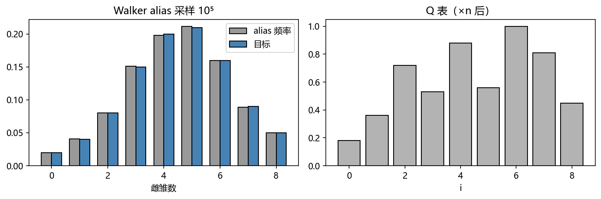
2.3 概率模拟例：二项分布（The Binomial Distribution）#
场景：\(n\) 次独立伯努利试验，\(X=\) 成功次数。先解决计数：\(x\) 次成功发生在哪 \(x\) 次上？
书先摆出商式（\(\binom nx\) 的原始形态）：
推导它——把 \(x\) 个成功加以区分（记 \(S_1,\dots,S_x\)）：\(S_1\) 有 \(n\) 个位置可选，\(S_2\) 剩 \(n-1\)，……共
种。书用"4 字母单词"演示：用 S、s、F 造 4 字母词（恰一个 S 恰一个 s），\(4\cdot 3=12\) 个：SsFF, SFsF, SFFs, sSFF, FSsF, FSFs, sFSF, FsSF, FFSs, sFFS, FsFS, FFsS。但实际成功不可区分，\(x\) 个带下标符号的排列数是 \(x!\)（式 (2.3)），所以真正的方式数是商：
（把 SsFF 与 sSFF 配对合并，4 选 2 成功共 6 种词：SSFF, SFSF, SFFS, FSSF, FSFS, FFSS。）\(C(n,x)\) 同时是二项式系数——把它放进二项式定理：
对 (2.5) 关于 \(x\) 求和恰得 \((p+q)^n=1\)，概率归一自动成立。
二项分布 \(b(n,p)\) 的密度：
均值（式 (2.7)）推导——两条路都走一遍（概率论复习）：
直接算：\(\mu=\sum_{x=0}^n x\binom nx p^xq^{n-x}=\sum_{x=1}^n \frac{n!}{(x-1)!(n-x)!}p^xq^{n-x}=np\sum_{x=1}^n\binom{n-1}{x-1}p^{x-1}q^{n-x}\)。换元 \(y=x-1,\ m=n-1\)（则 \(n-x=m-y\)）：
另路（更快）：期望线性（式 (1.18)），\(X=X_1+\cdots+X_n\)（\(n\) 个独立伯努利），\(\mu=n\cdot p=np\)。
方差（式 (2.8)）：由第 1 章定理 1.1（独立可加）+ 伯努利方差 \(pq\)：
2.3.1 从二项抽样（Sampling from the Binomial）#
\(n\) 小：cdf 反演或 alias 法；或最简单——模拟：把底层伯努利试验重复 \(n\) 次（例：轮盘赌连开 20 把数红，重复 \(U<18/38\) 计数）。
\(n\) 很大时模拟不划算。书例：细胞分裂每次产生子细胞变异概率 \(p=10^{-7}\)，100 万次分裂有多少变异？——数一百万次伯努利太笨，下一节泊松登场。
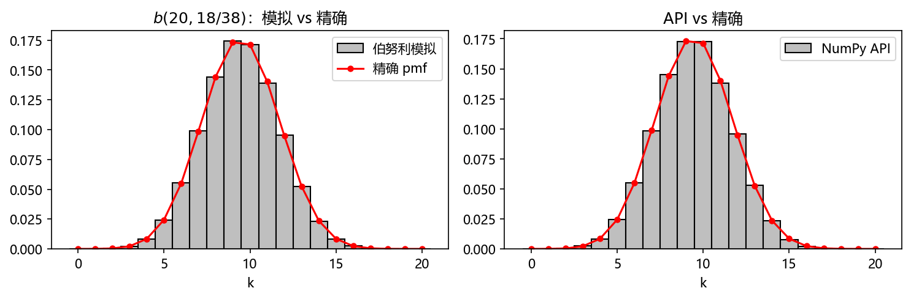
2.4 另一个模拟例：泊松分布（The Poisson Distribution）#
场景：伯努利试验次数巨大时数"成功"个数。例：911 急救台平均每 10 分钟 1 个电话，10:00–10:30 会来几个？——每秒来/不来是一次伯努利，30 分钟共 1800 次。
四条假设：事件率 \(\lambda>0\)，且
- (a) 不重叠区间内的事件数独立；
- (b) 充分短区间 \(h\) 内恰一个事件的概率 ≈ \(\lambda h\)；
- © 充分短区间内 ≥2 个事件的概率可忽略。
设 \(X_t\) = 长度 \(t\) 的区间内事件数。把 \(t\) 切成 \(n\) 段（\(n\) 大到 (b)© 成立），每段是一次成功概率 \(\lambda t/n\) 的伯努利，于是
极限的两步（书给出细节）：\(\binom nx\) 中的 \(x!\) 与 \((\lambda t)^x\) 归一组（\(x\) 固定），\(\frac{n!}{n^x(n-x)!}=\frac{n(n-1)\cdots(n-x+1)}{n^x}\to1\)；剩余因子 \((1-\lambda t/n)^{n-x}=(1-\lambda t/n)^n(1-\lambda t/n)^{-x}\to e^{-\lambda t}\cdot1\)。这就是泊松分布的密度。注意 \(\lambda t\) 是无量纲纯数：\(\lambda=1/10\) 每分钟、问 30 分钟，则 \(\lambda t=3\)。
泊松同样适用于空间事件：木板节疤率每 8 英尺 2 个，一根 8 英尺木料零节疤概率 \(\Pr(X_8=0)=\frac{2^0e^{-2}}{0!}=e^{-2}=0.135\)。
均值 = 方差 = \(\lambda t\)（书 Fig 2.3 全推导，摘录骨架）：均值直接用 \(e^{\lambda t}\) 的泰勒展开：
方差用"拆 \(k^2=k(k-1)+k\)"并借导数技巧 \(\sum k(\lambda t)^k/k!=(\lambda t)\frac{d}{d(\lambda t)}e^{\lambda t}\)：
泊松逼近二项：回到变异问题，\(n=10^6,\ p=10^{-7}\)，\(\lambda t=np=0.1\)：
九位小数才见差别。大 \(n\) 时二项、泊松还都可以用正态分布近似（§2.6）。
2.4.1 模拟抽泊松（Sampling the Poisson by Simulation）#
乘积法（精确）：取 \(U_0=1\)，\(U_i\sim U(0,1)\)，返回使
的最大整数 \(x\)。为什么对：连乘 \(<e^{-\lambda t}\) 等价于 \(\sum-\ln U_i>\lambda t\)，而 \(-\ln U_i\sim E(1)\)（§2.5.1）——这正是"事件间隔时间之和超过 \(t\)"的泊松计数语义（书 §2.5.1 的 Method 3，先记住结论）。书 Alg 2.5 即此。
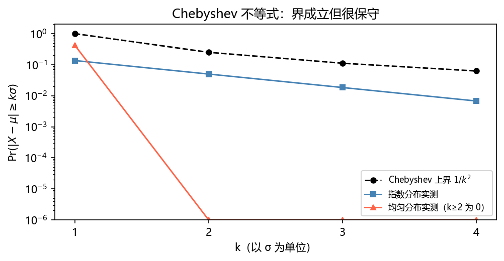
2.5 cdf 反演——连续情形：指数分布（The Exponential Distribution）#
指数分布刻画"事件"的随机等待时间：排队顾客到达、机械零件失效、生物出生/死亡——假设与泊松相同，两者血肉相连：指数随机变量 = 首个泊松事件的等待时间。\([0,t)\) 内无事件的概率为 \(e^{-\lambda t}\)（(2.9) 取 \(x=0\)），故
即 cdf \(F(t)=1-e^{-\lambda t}\)，密度 \(\operatorname{pdf}(t)=F'(t)=\lambda e^{-\lambda t}\)，记作 \(E(\lambda)\)。约 \(h\) 小区间内事件概率 ≈ \(\operatorname{pdf}(t)h\)。
无记忆性（memoryless / Markovian）：等到时刻 \(a\) 还没发生，则再等 \(b\) 的分布与从头等 \(b\) 相同：
验证（cdf 直接算）：
均值 \(\mu=1/\lambda\)（式 (2.11)，分部积分 \(u=t,\ dv=\lambda e^{-\lambda t}dt\)）：
方差 \(=1/\lambda^2\)（式 (2.12)，书 Fig 2.4 两次分部积分完成）。指数是唯一无记忆的连续分布——这正是排队论要精确解析就必须假设指数等待时间的原因。
2.5.1 反转 cdf——指数的规范方法（The Canonical Method）#
解方程 \(U=1-e^{-\lambda W}\) 得
（RNG 返回严格小于 1 的值，\(\ln\) 的参数不会为 0。）这是通用方法，由以下定理背书：
定理 2.1（反转累积分布函数，连续情形）
设 \(F\) 是随机变量 \(X\) 的连续 cdf，令 \(U=F(X)\)，则 \(U\) 均匀分布于 \([0,1)\)。反之，若 \(U\sim U(0,1)\)，则 \(X=F^{-1}(U)\) 服从 cdf \(F\)。
证明：需证 \(\Pr(U\le u)=u\)（\(0\le u<1\)）。\(F\) 连续且增，故 \(F^{-1}\) 存在；记 \(x=F^{-1}(u)\)：
一般情形（\(F\) 可有跳变，混合离散/连续分布也适用）：采样 \(U\sim U(0,1)\)，返回
证明要点（书 Fig 2.5）：\(X\le x\iff U\le F(x)\)。若 \(U\le F(x)\) 则 \(x\) 属于集合 \(\{\xi:F(\xi)\ge U\}\) 故 \(x\ge X\)；反之由单调性 \(F(X)\le F(x)\)。跳变处用右连续性 \(\lim_{\epsilon\to0^+}\Pr(X\le x+\epsilon)=\Pr(X\le x)\)。
反演法的缺点：需要 cdf 的显式公式，而显式 cdf 往往不存在（正态就是典型）。有显式公式时它非常强大。
抽泊松的三种方法（泊松随机变量 = \([0,t)\) 内指数事件数）：
- Method 1：\(W_i\sim E(\lambda)\)，取最大 \(K\) 使 \(\sum_{i=1}^K W_i<t\)；
- Method 2：\(Y_i\sim E(1)\)，取最大 \(K\) 使 \(\sum_{i=1}^K Y_i<\lambda t\)——省去每次除以 \(\lambda\)（因 \(Y\) 乘 \(1/\lambda\) 即 \(E(\lambda)\)）；
- Method 3：对 Method 2 取对数——\(U_0=1\)，\(\prod_{i=0}^K U_i>e^{-\lambda t}\) 的最大 \(K\)（因为 \(-\sum Y_i>-\lambda t\iff \prod U_i>e^{-\lambda t}\)，且 \(Y\) 是 \(E(1)\iff e^{-Y}\) 是 \(U(0,1)\)，见 §2.5.3）。
多个独立等待时间：过程 \(A\) 率 \(\lambda_A\)、\(B\) 率 \(\lambda_B\) 独立，"谁先发生"的等待时间：\(\Pr(A\ or\ B\ \text{occurs in}\ [t,t+\Delta t)|\text{not before})\approx(\lambda_A+\lambda_B)\Delta t\)，即合并过程是率 \(\lambda_A+\lambda_B\) 的指数。用 cdf 验证：
2.5.2 离散事件模拟（Discrete Event Simulation）#
排队论（queuing theory）场景：业务/工业中的随机等待时间网络。超越最简设置的排队网络解析无望，转蒙特卡罗——离散事件模拟（discrete event simulation）。模拟的好处：任意等待时间分布即插即用。
事件调度（event scheduling）架构：由"模拟执行器"驱动，维护按时间排序的事件时刻表（master schedule）；处理一个事件时按等待时间分布采样新事件、插入时刻表。
书例（组织生长）：1 个细胞、8 小时、成熟时间 \(\sim E(0.5)\) 每小时。原细胞采到 \(W=3\) → 时刻表 \(S[1]=3\)；推进到 \(t=3\) 分裂，两个子细胞各采 \(W=4,W=1\) → 绝对时刻 \(7,4\) → 排序成 \(S[2]=4,S[3]=7\)；下一事件 \(t=4\) 再采 \(2,5\) → \(S[3]=6,S[4]=7\)；\(W=5\) 的事件在 \(t=9>8\) 超出研究窗口，不入表。直到所有未来事件越界，统计产出。
2.5.3 随机变量的变换：柯西分布（Transforming Random Variables, the Cauchy Distribution）#
上节用到"\(Y\) 是 \(E(1)\) 则 \(X=(1/\lambda)Y\) 是 \(E(\lambda)\)"。一般地 \(X=g(Y)\)（\(g\) 一一映射），求 \(X\) 的分布有两条路：
路一（cdf 匹配）：\(\operatorname{cdf}_X(x)=\Pr(\frac1\lambda Y\le x)=\Pr(Y\le\lambda x)=1-e^{-\lambda x}\)——所以 \(X\sim E(\lambda)\)。
路二（pdf 匹配，换元）：积分换元 \(t=g(\tau)\)、\(A=[a,b]\)、\(B=g^{-1}(A)\)：
应用于密度：\(\Pr(X\in A)=\Pr(Y\in g^{-1}(A))=\int_{g^{-1}(A)}f_Y(\tau)d\tau=\int_{g^{-1}(A)}f_X(g(\tau))g'(\tau)d\tau\)，比较两端得隐式关系
要显式公式得对 \(g^{-1}\) 用换元：
（验证指数例：\(f_Y(\tau)=e^{-\tau}\)，\(g(\tau)=\tau/\lambda\)，代入 (2.14)：\(e^{-\tau}=\lambda e^{-\lambda(\tau/\lambda)}\cdot\frac1\lambda\) ✓。）
柯西分布：\(Y\sim U(-\pi/2,\pi/2)\)，\(X=\tan Y\)。这里 \(g(t)=\tan t\)，\(g^{-1}(t)=\arctan t\)，由 (2.15)：
柯西密度关于 0 对称，均值 \(\mu_X=0\)（书 Fig 2.6），但方差无穷：\(\frac1\pi\int_{-\infty}^\infty\frac{t^2}{1+t^2}dt\) 发散——尾巴太"胖"。高斯之前它曾被当作正态的候选；与正态外形相似，但正态方差有限而柯西没有（脚注：柯西分布可作"倒霉运气的等待时间"模型，见 Feller）。
参数化：把 \(t\) 换成 \((t-t_0)/\gamma\)（\(\gamma>0\)）：中心移到 \(t_0\)、宽度缩放 \(\gamma\)。采样即反演 cdf（式 (2.17)）：\(F_X(x)=\frac12+\frac1\pi\arctan x\)，解出
即为柯西样本。
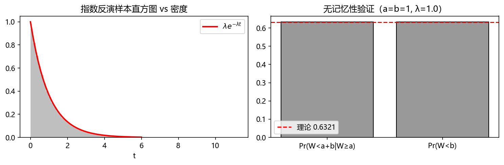
2.6 中心极限定理与正态分布（The CLT and the Normal Distribution）#
前面各直方图反复出现钟形——不是巧合，是中心极限定理（CLT）在起作用。
标准正态密度：\(f(x)=e^{-x^2/2}/\sqrt{2\pi}\)（对称、恒正、钟形、\(x\to\pm\infty\) 衰减；全直线积分 \(\sqrt{2\pi}\)——书脚注：极坐标下算 \(\iint e^{-(x^2+y^2)/2}dx\,dy\)）。缩放与平移得一般正态密度：
记作 \(N(\mu,\sigma^2)\)。由变换原理（§2.5.3），\(X\sim N(\mu,\sigma^2)\Rightarrow Y=(X-\mu)/\sigma\sim N(0,1)\)。均值方差恰为 \(\mu,\sigma^2\)（书 Fig 2.8 完整推导：换元 \(u=(x-\mu)/\sigma\) 后奇函数项归零，\(\int u^2\) 用分部积分配方）。
正态 cdf 无初等原函数——数值上用有理逼近（rational approximation）计算：书 Alg 2.6（Abramowitz–Stegun 系数）给出全轴 3 位精度，Table 2.2 即其输出（\(F(1.0)=0.841\)、\(F(1.96)\approx0.975\) 等）。
定理 2.2（中心极限定理 CLT）
设 \(X_1,\dots,X_n\) 独立同分布，均值 \(\mu\)、方差 \(\sigma^2<\infty\)。则
当 \(n\to\infty\) 的极限分布为 \(N(0,1)\)。
对蒙特卡罗的含义：不论总体分布长什么样（二项、泊松、连续、偏斜都行），样本均值的分布都收敛到正态——这就是为什么第 1 章蒲丰 super-experiment 的直方图是钟形，也是下一小节误差棒的全部依据。习题 29/30 用指数、gamma、泊松总体实证。
2.6.1 从正态抽样（Sampling from the Normal）#
三个方法（习题 27 要求对比速度与精度）：
① 中心极限算法（近似、快糙）：抽 \(n\) 个 \(U_i\sim U(0,1)\)，返回
由 CLT 近似 \(N(0,1)\)（\(U(0,1)\) 均值 \(1/2\)、方差 \(1/12\)，式 (1.20)(1.21)）。常取 \(n=12\) 免去开方除法。
② Box–Muller（精确、一次出两个）：取 \(U_1,U_2\sim U(0,1)\)：
则 \(X_1,X_2\) 独立且都 \(N(0,1)\)。看似 \(X_1\) 会泄露 \(X_2\) 的信息，其实不然——给定 \(X_1=0.7\)，满足第一式的 \((U_1,U_2)\) 轨迹与给定 \(X_2=2.0\) 的轨迹有唯一交点（书 Fig 2.9）。
③ Marsaglia–Bray（精确、省超越函数）：
- \(U_1,U_2\sim U(0,1)\)，令 \(V_1=2U_1-1,\ V_2=2U_2-1,\ S=V_1^2+V_2^2\)；
- 若 \(S\ge1\) 回到 1（拒绝）；否则返回
只用一次超越函数（Box–Muller 用三次），代价是拒绝率（书留问题：拒绝比例是 \(1-\pi/4\approx21.5\%\)，因 \((V_1,V_2)\) 均匀落在单位方块、接受域是内切单位圆）。今天机器速度与超越函数效率已让这点差别无足轻重。
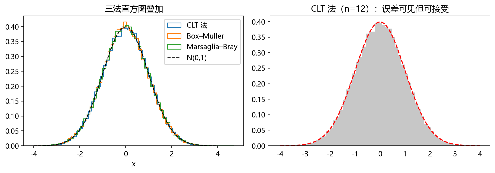
Box–Muller 证明（书 Fig 2.10）
设 \(\tau\) 为变换 \(\binom{x_1}{x_2}=\tau(u_1,u_2)=\binom{\cos(2\pi u_1)\sqrt{-2\ln u_2}}{\sin(2\pi u_1)\sqrt{-2\ln u_2}}\)，\(f_{U_1,U_2}=1\)（单位方形上均匀）。平方相加消去角度：
密度关系 \(f_{X_1,X_2}(x_1,x_2)=f_{U_1,U_2}(\tau^{-1}(x))\det(\tau^{-1})=1/\det\tau'\)。计算雅可比（逐项求导后合并 \(\sin^2+\cos^2\)）：
代入 (∗)：\(\det(\tau^{-1})=\frac{u_2}{2\pi}=\frac{1}{2\pi}e^{-\frac12(x_1^2+x_2^2)}\)，于是
——联合密度因式分解成两个 \(N(0,1)\) 密度之积：既各是标准正态又相互独立。∎
（Marsaglia–Bray 的证明同构：\((V_1,V_2)\) 在圆盘内均匀、半径平方 \(S\) 有密度 \(\frac12\)，故 \(-\ln S\sim E(1)\)——把 Box–Muller 的 \(U_2\) 换成了 \(e^{-S}\)。）
2.6.2 借 CLT 的近似抽样（Approximate Sampling via the CLT）#
例：1000 次伯努利 \(p=0.995\)（产线上 1 小时合格灯泡数）。直接模拟 1000 次太笨；CLT 给捷径：\(\mu=p,\ \sigma^2=pq\)，则
抽一个 \(n\sim N(0,1)\)（如 \(n=0.68\)），反解 \(r=2.2305n+995=996.52\to 997\)（取整）即为 \(R_{1000}\) 的样本。
2.6.3 蒙特卡罗模拟的误差估计（Error Estimates for MC Simulations）#
这是全书方法论的关键件：任何模拟输出一个标量估计 \(\theta\)（等待时间、通量……），怎么挂置信区间？
设 \(X_1,\dots,X_n\) 为 \(n\) 次独立模拟的估计（均值 \(\theta\)、方差 \(\sigma_X^2\) 未知）。由 CLT，\(\bar X\) 近似正态，故
即 95.4% 概率 \(\theta\in\big(\bar X-2\sqrt{\sigma_X^2/n},\ \bar X+2\sqrt{\sigma_X^2/n}\big)\)。
现实三难题：(1) \(\sigma_X^2\) 未知要估计，此时 \(Y\) 不再正态；(2) \(X_i\) 可能不同分布（模拟有启动效应 start-up effects）；(3) \(X_i\) 可能相关——排队模拟的常态。
**Batching（分批）**对治 (2)(3)：把 \(n\) 个试验切成 \(m\) 批、每批 \(J=n/m\) 个：
批均值近似独立同分布。于是 \(\hat\theta=\bar B=\frac1m\sum B_i\) 是估计量，\(\frac{\hat\theta-\theta}{\sqrt{\sigma_B^2/m}}\approx N(0,1)\)。\(\sigma_B^2\) 用样本方差估：
\(s_B^2\) 本身是随机变量（gamma 分布，见 §2.9），于是 \(Y\) 变成"正态/gamma"之比——Student-\(t\) 随机变量，自由度 \(\nu=m-1\)：
查 \(t\) 表定 \(t_\alpha\)：\(\Pr(-t_\alpha<t<t_\alpha)=\alpha\)。表若给累积值（\(\Pr(t<t_\beta)=\beta\)），换算 \(\beta=\frac{1+\alpha}2\)（95% 置信 → 查 \(\beta=0.975\) 列，书 Table 2.4：DOF=20 时 \(t=2.09\)）。
m 与 J 的取舍：\(m\) 大 → 置信区间窄（好）；但 \(J\) 必须大到批均值近似独立不相关。习题里让你实测覆盖率。
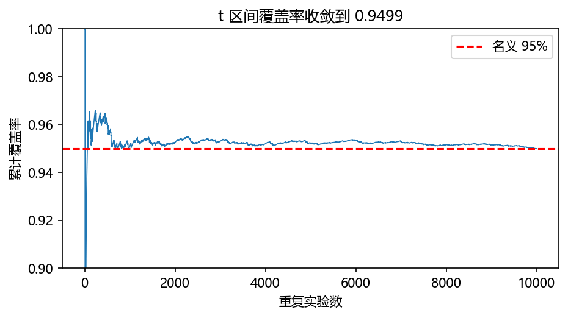
拓展（数理统计复习）：为什么是 Student-t
\(\frac{\bar B-\theta}{\sigma/\sqrt m}\sim N(0,1)\)，但 \(\sigma\) 换成随机量 \(s_B\) 后分母多出一个 \(\chi^2\) 型涨落（\((m-1)s_B^2/\sigma_B^2\sim\chi^2_{m-1}\)，与 \(\bar B\) 独立），商恰为自由度 \(m-1\) 的 t 分布。自由度越小尾部越胖（\(t_{0.975}\) 从 DOF=1 的 12.71 收敛到 \(\infty\) 的 1.96）——这就是"方差也要靠样本估"的代价。
2.7 Gibrat 定律与对数正态分布（Gibrat's Law and the Lognormal Distribution）#
\(Y\sim N(\alpha,\beta^2)\)，\(X=e^Y\)，则 \(X\) 对数正态分布，记 \(X\sim LN(\alpha,\beta^2)\)（恒正）。密度由换元 \(r=\log u\) 得：
均值与方差（式 (2.23)，书 Fig 2.11 完整推导——配方技巧，值得抄一遍均值部分）：换元 \(u=\log x,\ x=e^u,\ dx=e^u du\)：
指数里配方 \(u^2-2u\alpha\to u^2-2u(\alpha+\beta^2)+(\alpha+\beta^2)^2-\alpha^2\) 补出常数 \(e^{2\alpha\beta^2+\beta^4}/e^{\alpha^2}\) 因子，凑成
最后的积分是 \(N(\alpha+\beta^2,\beta^2)\) 的密度积分 = 1。同法（对 \(\mathbb E(X^2)\) 配方到 \(\alpha+2\beta^2\)）：
采样平凡：\(Y\sim N(\alpha,\beta^2)\)，\(X=e^Y\)。
乘法中心极限定理与 Gibrat 律：设 \(R_i\) 独立同分布、取正值、方差有限，\(X=\prod_{i=1}^n R_i\)。取对数化乘为加：\(\log X=\sum\log R_i\)，n 大时用 CLT：
其中 \(u=\mathbb E(\log R)\)、\(v^2=\operatorname{var}(\log R)\)。
Gibrat 定律
\(R_1,\dots,R_n\) 独立取自仅取正值、方差有限的分布，则 \(X=\prod R_i\) 趋于对数正态 \(LN(nu,nv^2)\)。
含义（比例效应）：一个量按百分比随机增长时，其长期水平是对数正态的——公司规模、生物体型、粒子破碎都近似如此。这正是第 4 章几何布朗运动（股价 \(\mathrm dS/S=\mu\,\mathrm dt+\sigma\,\mathrm dW\)，其终值 \(S_T\) 对数正态）的理论注脚。
书例：\(R\sim U(0.2,2.0)\)、\(n=10\)。\(u=\mathbb E(\log(a+cU))\)、\(v^2=\operatorname{var}(\log(a+cU))\) 的积分（书 Fig 2.13 用换元 \(p=a+cu\) + 分部积分算出 \(b(\log b-1)-a(\log a-1)\) 等闭式）代入 \(a=0.2,b=2.0,n=10\)：
书 Fig 2.12：200 万个 10 因子乘积的直方图与精确 \(LN\) 密度（对数 y 轴）几乎重合。
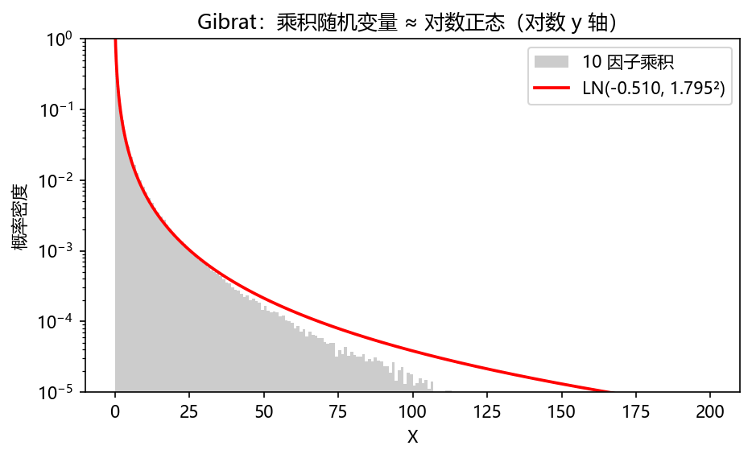
2.8 拒绝采样：beta 分布（Rejection Sampling: The Beta Distribution）#
Marsaglia–Bray 引入的新思想——对候选值施加检验——可以推广成完全通用的抽样法：拒绝采样（rejection sampling）。
热身（离散）：用掷硬币实现 \(p=1/3\) 的伯努利。掷两次：HH → 成功；HT/TH → 失败；TT → 作废重来。条件概率给出正确性：
加入接受/拒绝纪律后，只有目标的相对比例重要：目标概率换成 \(1/7,1/7,1/7\)，"成功"照样以 ⅓ 返回。第二个例子（三次掷硬币选 1@⅖、⅔/4@各⅕）：把目标概率除以 \(M=8/5\) 压到提案概率之下（\(2/5\to1/4\)），修改后目标 \(1/4,1/8,1/8,1/8\)；接受纪律：HH 必收（\(f/g=1\)），HT/TH/TT 各收一半（\(\frac{1/8}{1/4}=1/2\)，用第三次掷硬币决断）。接受率 \(\frac14\cdot1+3\cdot\frac14\cdot\frac12=\frac58\)；返回值"1"的概率 \(\frac{1/4\cdot1}{5/8}=\frac25\) ✓。书 Fig 2.14 画出目标 \(f\) 与提案 \(Mg\) 的柱状对比。
一般框架：目标密度 \(f\)、提案密度 \(g\)（在 \(f\ne0\) 处 \(g>0\) 即可）、接受纪律 \(h(\cdot)\)：
- 抽 \(Y\sim g\)；
- 以概率 \(h(Y)\) 返回 \(X=Y\)，否则回到 1。
连续情形的正确性（无穷小概率比值）：
构造算法：取常数 \(M\) 使 \(f(x)\le Mg(x)\) 对一切 \(x\)，令接受纪律
代入上式，接受样本的密度 \(=\dfrac{f(x)/M}{\int f(z)/M\,dz}=f(x)\)——精确命中目标。接受概率
即发生器效率 \(1/M\)——所以 \(M\) 要尽量小。\(g(x)=0\) 处无需担心：\(f\le Mg\Rightarrow f(x)=0\)，这样的 \(x\) 永远抽不到（书 Fig 2.15）。
2.8.1 beta 分布（The Beta Distribution）#
\(\alpha,\beta>0\) 任意（\(<1\) 时密度无界但积分有限）。归一化常数 \(c=1/B(\alpha,\beta)\)（式 (2.27)），beta 函数
均值 \(\mu=\dfrac{\alpha}{\alpha+\beta}\)，方差 \(\dfrac{\alpha\beta}{(\alpha+\beta+1)(\alpha+\beta)^2}\)（书不证，但给钥匙）：
\(\Gamma(\cdot)\) 是 gamma 函数（§2.9.1：\(\Gamma(n)=(n-1)!\)）。
正态替身（normal stand-in）：正态尾巴伸到无穷有时碍事（限值问题），用 beta 顶替：\(\mathrm{Be}(12,12)\) 均值 0.5、方差 0.01（书 Fig 2.16，归一常数 \(c=\frac{23!}{11!11!}=16{,}224{,}936\)）。beta 的另一大用途在贝叶斯推断（第 6 章）：先验 \(\mathrm{Be}(\alpha,\beta)\) 下观察到 \(n\) 次 \(k\) 成功，后验是 \(\mathrm{Be}(k+1,\ n-k+1)\)——先埋个伏笔。
2.8.2 从 Be(2,3) 抽样#
\(f(x)=12x(1-x)^2\)，\(0\le x\le1\)（书 Fig 2.17）。提案取均匀 \(g(x)=1\)；\(f\) 最大值 \(16/9\)，取 \(M=16/9\)，接受纪律
书演示一轮：\(U=0.8213\to h=0.0786\)，副实验 \(R=0.616>h\) 拒绝；重抽 \(U=0.384\to h=0.4371\)，\(R=0.00506\le h\) 接受，返回 0.384。
hit-or-miss 视角：把 \((U,\tfrac{16}{9}R)\) 画进 Fig 2.17——\(U\) 在 \(f\) 图形下方就接受、上方就拒绝。拒绝采样就是打中与否。
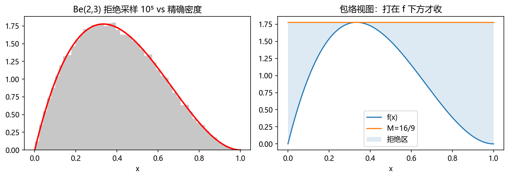
2.8.3 无界 beta 的拒绝采样（Sampling from an Unbounded Beta）#
取 \(\alpha=\beta<1\)（密度在 0、1 无界）演示两个新思想的组合：复合造提案 + 拒绝收尾。目标 \(f(x)=cx^{\alpha-1}(1-x)^{\alpha-1}\)（\(c\) 无需求出——拒绝采样只要相对值，这是它的重要特性）。
提案：按对称性把定义域切成 \([0,\tfrac12)\) 与 \([\tfrac12,1]\)，只需在 \([0,\tfrac12)\) 抽 \(X\)，再以 ½ 概率返回 \(X\) 或 \(1-X\)。半区上的提案密度取 \(g(x)=c'x^{\alpha-1}\)，其 cdf \(G(x)=c'x^\alpha/\alpha\)，由 \(G(\tfrac12)=1\) 得 \(c'=\alpha/(\tfrac12)^\alpha\)；反演得采样式 \(Y=\frac12U^{1/\alpha}\)。
M 与 h：\(\alpha<1\) 时 \((1-x)^{\alpha-1}\) 在 \(x=\tfrac12\) 最大，取 \(M=(\tfrac12)^{\alpha-1}c/c'\)，则 \(Mg\ge f\) 成立（书逐行验证）；接受纪律
算法（Be(α,α), α<1）：① \(U\sim U(0,1)\)，\(Y=\frac12U^{1/\alpha}\)；② 副实验 \(R\sim U(0,1)<h(Y)\) 接受否则回①；③ 再抽 \(U\)：\(U<\tfrac12\) 返回 \(Y\)，否则返回 \(1-Y\)。
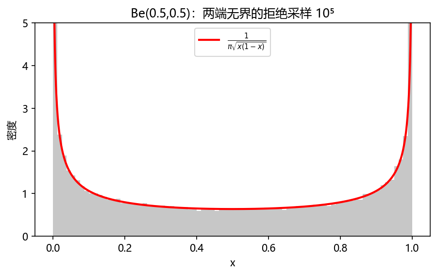
2.9 复合分布：抽样 gamma 分布（Composite Distributions: Sampling the Gamma）#
复合（composition）：\(n\) 个独立密度 \(f_i\) 加权重 \(p_i>0\)（\(\sum p_i=1\)），构造随机变量
形式化：\(X=\sum_{i=1}^nX_i\,\mathbb 1_i(M)\)（\(M\) 是轮盘赌指标选择，\(\mathbb 1_k\) 示性函数，式 (2.32)）。
合成密度：\(f(x)=p_1f_1(x)+\cdots+p_nf_n(x)\)（式 (2.33)，对事件 \(A\) 按全概率分解 (1.28) 即证）。均值与方差：
（式 (2.36)(2.37) 给出 \(n=2\) 全推导；书 Fig 2.18 给一般情形：\(\mathbb E(X^2)=\sum p_i\mathbb E(X_i^2)\) 起步，交叉项凑成 \((\mu_i-\mu_j)^2\)。方差比均值多出的那项，正是"成分间均值差异"的代价——直觉：抽到的成分本身也在随机换。）
用途一：逼近任意密度——分段常数（直方图式，\(f_i\) 是均匀密度）或分段梯形（\(f_i\) 是缩放的线性函数），都易采样。
用途二：给拒绝法定制分段提案（envelope）——复合 + 拒绝的组合拳能处理许多别的方法碰不了的分布。§2.8.3 已见受限版（对称两成分），下面用它解决 gamma。
2.9.1 gamma 分布（The Gamma Distribution）#
泊松过程事件率 \(\beta\)：指数 = 第 1 事件的等待时间；gamma 分布 \(G(\alpha,\beta)\) = 第 \(\alpha\) 事件的等待时间 \(W\)。用 (2.9) 写 cdf：
对 \(w\) 求导——裂项相消（telescoping）：\(-\sum_{j=0}^{\alpha-2}\frac{\beta(\beta w)^j}{j!}e^{-\beta w}+\beta\sum_{k=0}^{\alpha-1}\frac{(\beta w)^k}{k!}e^{-\beta w}\)，前 \(\alpha-1\) 项逐对抵消，只剩
含义：\(f(w)h\) ≈ 第 \(\alpha\) 事件落在 \([w,w+h)\) 的概率。
降维处理：换元 \(Y=\beta W\)（式 (2.15)）把 \(G(\alpha,\beta)\) 化为 \(G(\alpha,1)\)；要用时 \(W=Y/\beta\) 换回。
再生性（reproductive property）——gamma 最重要的性质：
再生性
\(W_1\sim G(\alpha_1,\beta)\)、\(W_2\sim G(\alpha_2,\beta)\) 独立 \(\Rightarrow W_1+W_2\sim G(\alpha_1+\alpha_2,\beta)\)。
直觉：等 \(\alpha_1+\alpha_2\) 个事件 = 先等 \(\alpha_1\) 个再等 \(\alpha_2\) 个，等待时间相加。书 Fig 2.19 给整数情形证明：对 \(W_1=x\) 分解、卷积积分 \(\int_0^w(w-x)^{\alpha_2-1}x^{\alpha_1-1}e^{-w}dx\)，分部积分 \(\alpha_1-1\) 次后剩 \(\frac{w^{\alpha_1+\alpha_2-1}e^{-w}}{(\alpha_1+\alpha_2-1)!}\)。∎
推论：gamma 的均值方差是 \(\alpha\) 个指数均方差的累加：\(\mu=\dfrac{\alpha}{\beta}\)，\(\operatorname{var}=\dfrac{\alpha}{\beta^2}\)。
\(\alpha\) 为整数时叫 Erlang 分布；\(\alpha\) 推广到任意正实数需要 gamma 函数替换阶乘：
（\(\Gamma(1/2)=\sqrt\pi\) 正是 §2.6 极坐标积分的副产品——两处知识对上了。）
2.9.2 从 \(G(\alpha,1)\) 抽样（Sampling from G(α, 1)）#
情形一：\(0<\alpha<1\)（拒绝 + 复合）。目标 \(f(x)=\frac{1}{\Gamma(\alpha)}x^{\alpha-1}e^{-x}\)（常数可忽略）。观察：\(e^{-x}\) 在 \(x=1\) 处是 \(1/e\)，而 \(x^{\alpha-1}\) 在 \(x=1\) 处是 1，差 \(e\) 倍——用这个观察"缝合"两段提案：
- \(f_1(x)=\alpha x^{\alpha-1}\) 于 \([0,1)\)（cdf \(x^\alpha\)）；
- \(f_2(x)=e^{1-x}\) 于 \([1,\infty)\)（cdf \(1-e^{1-x}\)）；
- 复合 \(g=p f_1+(1-p)f_2\)，权重 \(p\) 取到使 \(g\) 在 \(x=1\) 两侧极限差 \(e\) 倍：\(p\alpha=e(1-p)\Rightarrow p=\dfrac{e}{e+\alpha}\)，于是 \(g(x)=\dfrac{e\alpha}{e+\alpha}\big(x^{\alpha-1}\chi_1(x)+e^{-x}\chi_2(x)\big)\)；
- 包络常数 \(M=\dfrac{e+\alpha}{e\alpha}\)（两段都验证 \(Mg\ge f\)）；接受纪律 \(\dfrac{f(Y)}{Mg(Y)}=\begin{cases}e^{-Y},&Y<1\\ Y^{\alpha-1},&Y\ge1\end{cases}\)；
- 算法：① \(U_1,U_2\sim U(0,1)\)；② 若 \(U_1<\frac{e}{e+\alpha}\)（A 段）置 \(Y=U_2^{1/\alpha}\)，否则（B 段）\(Y=1-\ln U_2\)；③ 副实验 \(R\sim U(0,1)\)：A 段 \(R<e^{-Y}\) 收、B 段 \(R<Y^{\alpha-1}\) 收，否则回①。效率 \(1/M=\dfrac{e\alpha}{e+\alpha}\)。
情形二：任意 \(\alpha>0\)（再生性拼装）。\(m=\operatorname{int}[\alpha]\)、\(\delta=\operatorname{frac}(\alpha)\)：\(Y\sim G(m,1)\) 用模拟指数和造——\(W=-\ln U\sim E(1)\)（§2.5.1），故
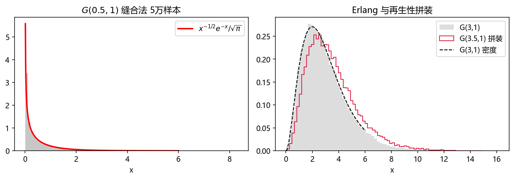
2.10 从联合分布抽样（Sampling from a Joint Distribution）#
设 \(f(x,y)\) 是域 \(D\) 上的联合密度，要抽 \((X,Y)\sim f\)。流程（第 1 章式 (1.36)(1.37) 的直接应用）：
- 算边缘 \(f_X(x)=\int_{y\in D}f(x,y)\,dy\)；
- 算条件 \(f_{Y|X}(y|x)=f(x,y)/f_X(x)\)；
- 先抽 \(X\sim f_X(\cdot)\)，再抽 \(Y\sim f_{Y|X}(\cdot)\)。
书例（三角形均匀分布）：\(D\) 由 \(x=0,\ y=0,\ y=1-x\) 围成（面积 ½，故 \(f(x,y)=2\)）。边缘 \(f_X(x)=\int_0^{1-x}2\,dy=2(1-x)\)；条件 \(f_{Y|X}(y|x)=\frac{2}{2(1-x)}=\frac1{1-x}\)。各自反演 cdf：
解 \(U_1=2X-X^2\) 得 \(X=1-\sqrt{1-U_1}\)（取负号因 \(X\le1\)）；解 \(U_2=\frac{Y}{1-X}\) 得 \(Y=U_2(1-X)\)；把 \(1-U_1\) 安全地换成 \(U_1\)（同为 \(U(0,1)\)）：
书 Alg 2.8 + Fig 2.20：200 个样本精确铺满三角形。边缘-条件两步走是联合抽样的通用模板——第 6 章 Gibbs 抽样（§6.2）是它的 MCMC 化身。
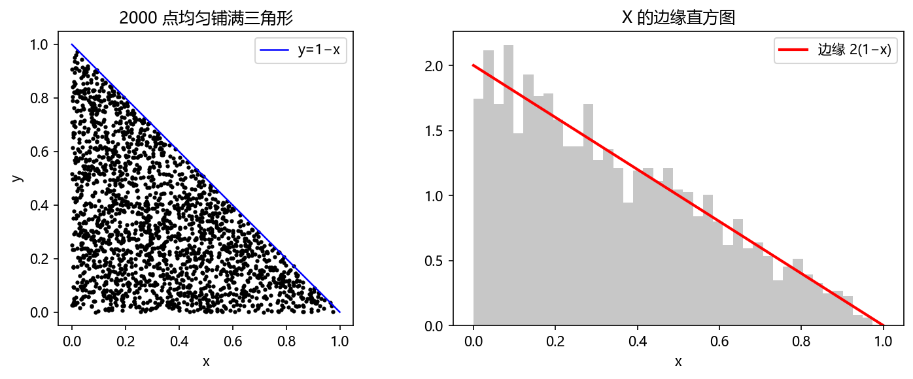
补充（Dunn & Shultis）：与本章逐节对应的阅读地图
Dunn §2（连续随机变量：pdf/cdf/期望、均匀与正态）、§3（离散随机变量与 pmf）、§4（抽样方法总表：反演/组合/接受拒绝各一章）、§5（随机向量与联合分布）。口径差异：Dunn 把"逆变换法"直接叫 inverse transform，把本章 §2.9 的复合叫 composition method，并单列"卷积法"（独立和的分布）处理 gamma 的再生性——与书 Fig 2.19 的卷积证明是同一件事的两种讲法。
坑与陷阱#
1. 把比值当随机变量再统计时要分清谁是随机的
二项抽样用"重复 \(n\) 次伯努利"没问题，但对比值型估计量（如 \(n/H_n\)）做直方图前先想清楚分子分母谁是随机的——第 1 章坑 1 的教训以 \(p\) 估计的形式重演。
2. 泊松的 λt 是无量纲数，单位先统一再代入
率 \(\lambda\) 的时间单位必须与 \(t\) 一致（每分钟 × 分钟）。书木板例：\(\lambda=(2/8)\) 每英尺 × 8 英尺 = 2。单位错了结果差几个数量级。
3. 柯西没有均值方差——别套 CLT
柯西方差无穷 → 大数定律/CLT 前提全失效：样本均值不收敛。任何"柯西的置信区间"都是伪制品。检验重尾：看样本均值轨迹是否稳定（实验 6 右图）。
4. 反演法要求显式 cdf；没有就换方法
正态 cdf 无初等式——反演不可用，用 Box–Muller/Marsaglia–Bray；一般 cdf 只能数值反演（误差另计）。§2.5.1 定理 2.1 的一般式 \(\inf\{\xi:F(\xi)\ge U\}\) 处理跳变，别用 \(F^{-1}(U)\) 硬套离散分布。
5. 拒绝采样的 M 必须真正罩住 f
\(f\le Mg\) 若在个别点失效（比如 \(g\) 尾巴比 \(f\) 衰减快），样本在该区域系统性偏少且几乎无法从直方图看出。选 \(g\) 时先比较尾指数；效率 \(1/M\) 太低（<5%）说明 \(g\) 选得差。
6. batching 的 J 太小 → 批均值仍相关，区间偏窄
式 (2.21) 的 95% 是"批独立"前提下的 95%。\(J\) 太小时实测覆盖率会低于名义值（实验 8 里可把 J 调小复现）。\(m\) 与 \(J\) 的取舍没有万能公式，需试跑。
7. 对数正态的均值被尾巴主导
\(\mathbb E(X)=e^{\alpha+\beta^2/2}\) 里 \(\beta^2\) 在指数上：\(\beta\) 稍大均值就被极端值拖飞（样本均值收敛极慢）。报对数正态结果时先看 \(\beta\)，必要时报告中位数 \(e^\alpha\) 而非均值。
8. 联合抽样'先边缘后条件'的条件必须用上一次的样本
流程 \(X\sim f_X\) 后 \(Y\sim f_{Y|X}(\cdot|x)\) 中的 \(x\) 是刚抽到的那个值；写成独立两次采样是最常见的实现 bug（第 6 章 Gibbs 的顺序更新同源）。
速览#
- 五大技术：反演（离散断点/连续 \(F^{-1}(U)\)）、模拟（重复底层试验）、复合（按权重选成分）、变换（\(f_X(x)=f_Y(g^{-1})(g^{-1})'\)）、拒绝（\(h=f/Mg\)，效率 \(1/M\)）。
- 伯努利：\(\mu=p,\ \operatorname{var}=pq\)；多结果反演的断点法可按概率降序重排加速（2.55→1.65）。
- Walker alias：\(Q,A\) 两表、采样 \(O(1)\)；构造=不足扇区向超额扇区借概率；本质是复合。
- 二项：计数 \(C(n,x)=\frac{n!}{x!(n-x)!}\)；\(\mu=np\)（换元 \(y=x-1\) 直推）；\(\operatorname{var}=npq\)（独立可加）。
- 泊松：二项极限 (2.9)；\(\mu=\operatorname{var}=\lambda t\)；泊松逼近二项九位小数才见误差；乘积法 \(\prod U_i>e^{-\lambda t}\) 抽样。
- 指数：无记忆（唯一连续）；\(W=-\ln(1-U)/\lambda\)；两率相加 \(\lambda_A+\lambda_B\)。
- 定理 2.1：\(U=F(X)\sim U(0,1)\iff X=F^{-1}(U)\)；一般式带 inf。
- 变换式 (2.15) 抽柯西：\(X=\tan(\pi(U-\frac12))\)；柯西均值 0 方差无穷。
- 正态三法：CLT 法（n=12）/Box–Muller（雅可比证明，独立成对）/Marsaglia–Bray（拒绝 \(1-\pi/4\)）。
- 误差棒流程：batching → \(s_B^2\) (2.20) → Student-\(t\) (2.21)，\(\nu=m-1\)，查表 \(\beta=(1+\alpha)/2\)。
- 对数正态：\(X=e^Y\)；\(E(X)=e^{\alpha+\beta^2/2}\)；Gibrat 律=乘法 CLT；\(U(a,b)\) 因子例 \(\alpha=-0.510,\beta=1.794\)。
- beta：\(B(\alpha,\beta)\)、\(\mu=\frac\alpha{\alpha+\beta}\)；Be(2,3) 拒绝采样 \(M=16/9\)；无界 beta=复合提案+对称反射。
- gamma：\(G(\alpha,\beta)\)=第 \(\alpha\) 事件等待；裂项得密度 (2.39)；再生性（Fig 2.19 卷积证明）；\(\alpha<1\) 用 \(e/(e+\alpha)\) 缝合两段提案，任意 \(\alpha=m+\delta\) 拼装。
- 联合抽样：边缘→条件两步；三角形例 \(X=1-\sqrt{U_1},\ Y=U_2\sqrt{U_1}\)。
术语速查#
| 英文 | 中文 | 一句话 |
|---|---|---|
| Bernoulli trial | 伯努利试验 | 两结果实验，\(\mu=p\)，var \(=pq\) |
| cdf inversion | cdf 反演 | \(X=F^{-1}(U)\)（定理 2.1） |
| breakpoint / search loop | 断点 / 搜索循环 | 离散反演的实现件 |
| roulette wheel selection | 轮盘赌选择 | 按概率填表，一次下标采样 |
| Walker's alias method | Walker 别名法 | \(Q,A\) 两表，无搜索 \(O(1)\) |
| binomial distribution \(b(n,p)\) | 二项分布 | \(n\) 重伯努利成功数 |
| binomial coefficient / theorem | 二项式系数/定理 | \(\binom nk\)；(2.6) 保证归一 |
| Poisson distribution | 泊松分布 | 率 \(\lambda\) 计数，\(\mu=\operatorname{var}=\lambda t\) |
| Poisson process | 泊松过程 | 独立增量 + 短区间 \(\lambda h\) |
| exponential distribution \(E(\lambda)\) | 指数分布 | 首事件等待，无记忆 |
| memoryless / Markovian | 无记忆 / 马尔可夫性 | \(\Pr(W<a+b\mid W\ge a)=\Pr(W<b)\) |
| discrete event simulation | 离散事件模拟 | 事件调度时刻表驱动 |
| transformation of RVs | 随机变量变换 | \(f_X=f_Y(g^{-1})(g^{-1})'\)（式 2.15） |
| Cauchy distribution | 柯西分布 | \(\tan\) 变换所得，方差无穷 |
| central limit theorem | 中心极限定理 | 标准化和收敛 \(N(0,1)\)（定理 2.2） |
| Box–Muller | Box–Muller 算法 | \(\cos/\sin\times\sqrt{-2\ln U}\) 精确正态对 |
| Marsaglia–Bray | Marsaglia–Bray 算法 | 圆盘拒绝版正态对 |
| batching | 分批 | 切批造近似独立批均值 |
| confidence interval | 置信区间 | \(\hat\theta\pm t_\alpha s_B/\sqrt m\) |
| Student-t / degrees of freedom | Student-t / 自由度 | 正态/估计方差之比，\(\nu=m-1\) |
| lognormal \(LN(\alpha,\beta^2)\) | 对数正态 | \(e^{\text{normal}}\)；Gibrat 律的极限 |
| Gibrat's Law | Gibrat 定律 | 乘性随机增长 → 对数正态 |
| rejection sampling | 拒绝采样 | 提案 \(g\) + 接受 \(h=f/(Mg)\) |
| proposal density | 提案密度 | 易抽样的罩子 \(g\) |
| acceptance discipline | 接受纪律 | 副实验概率 \(h(Y)\) |
| efficiency | 效率 | 接受率 \(1/M\) |
| beta distribution \(Be(\alpha,\beta)\) | beta 分布 | \([0,1]\) 上的弹性密度 |
| beta function \(B(\alpha,\beta)\) | beta 函数 | (2.28)，\(=\Gamma(\alpha)\Gamma(\beta)/\Gamma(\alpha+\beta)\) |
| composition | 复合（法） | 按权重选成分密度再抽样 |
| gamma distribution \(G(\alpha,\beta)\) | gamma 分布 | 第 \(\alpha\) 事件等待时间 |
| reproductive property | 再生性 | 独立 gamma 相加参数相加 |
| Erlang distribution | Erlang 分布 | 整 \(\alpha\) 的 gamma |
| gamma function \(\Gamma(t)\) | gamma 函数 | (2.40)；\(\Gamma(n)=(n-1)!\)，\(\Gamma(\frac12)=\sqrt\pi\) |
| marginal / conditional | 边缘 / 条件分布 | 联合抽样的两步台阶 |
覆盖自查#
原书小节 → 笔记位置
| 原书位置 | 内容 | 笔记位置 |
|---|---|---|
| 章首 | 五大技术总览、API 立场 | 导语 + §2.0 |
| §2.1 / 2.1.1 | 伯努利、两结果反演、轮盘例 | §2.1 |
| §2.1.2 | 多结果反演、Alg 2.1–2.3、重排序加速 | §2.1.2 |
| §2.2 | Walker alias：算法、Q/A 例、归纳构造、Alg 2.4、复合视角 | §2.2 |
| §2.3 / 2.3.1 | 二项计数 (2.1)–(2.4)、pmf (2.5)、定理 (2.6)、均值 (2.7)、方差 (2.8)、抽样 | §2.3 |
| §2.4 / 2.4.1 | 泊松极限 (2.9)、均值方差（Fig 2.3）、二项逼近、乘积法 Alg 2.5 | §2.4 |
| §2.5 | 指数 cdf (2.10)、无记忆、均值 (2.11)、方差 (2.12)（Fig 2.4） | §2.5 |
| §2.5.1 | 规范反演、定理 2.1（含 Fig 2.5 一般情形）、泊松三法、多等待时间 | §2.5.1 |
| §2.5.2 | 离散事件模拟、事件调度、组织生长例 | §2.5.2 |
| §2.5.3 | 变换 (2.13)–(2.15)、柯西 (2.16)、参数化、采样 (2.17) | §2.5.3 |
| §2.6 | 正态密度 (2.18)、均值方差（Fig 2.8）、有理逼近 Alg 2.6、CLT 定理 2.2 | §2.6 |
| §2.6.1 | 三法抽样：CLT 法、Box–Muller (2.19)（证明 Fig 2.10）、Marsaglia–Bray | §2.6.1 |
| §2.6.2 | CLT 近似抽样灯泡例 | §2.6.2 |
| §2.6.3 | 误差估计、batching、\(s_B^2\) (2.20)、Student-t (2.21)、Tables 2.3/2.4 | §2.6.3 |
| §2.7 | 对数正态 (2.22)、均值方差 (2.23)（Fig 2.11）、乘法 CLT (2.24)、Gibrat、\(U(a,b)\) 例（Fig 2.13, Alg 2.7） | §2.7 |
| §2.8 | 拒绝采样：硬币两例、一般框架 (2.25)、效率 | §2.8 |
| §2.8.1 | beta (2.26)–(2.29)、均值方差、正态替身（Fig 2.16）、贝叶斯伏笔 | §2.8.1 |
| §2.8.2 | Be(2,3) 抽样 (2.30)（Fig 2.17）、hit-or-miss 视角 | §2.8.2 |
| §2.8.3 | 无界 beta：复合提案、\(M\)、\(h\)、算法 | §2.8.3 |
| §2.9 | 复合分布 (2.31)–(2.38)（Fig 2.18）、用途两条 | §2.9 |
| §2.9.1 | gamma cdf (2.38)、密度 (2.39)、再生性（Fig 2.19）、Erlang、\(\Gamma\) (2.40) | §2.9.1 |
| §2.9.2 | \(G(\alpha,1)\)：\(\alpha<1\) 缝合算法、任意 \(\alpha\) 拼装 | §2.9.2 |
| §2.10 | 联合抽样流程、三角形例（Fig 2.20, Alg 2.8） | §2.10 |
| Problems 1–40 | 习题（St. Petersburg、Paris Salon、多维正态、球面抽样、泊松三路 P13、CLT 实证 P29/30…） | 关键题在对应节标注（P13、P27、P29/30） |
补充阅读（Dunn & Shultis §2–§5）
§2 连续随机变量（含均匀、正态的期望方差推导——与书 Fig 2.8 互为印证）；§3 离散随机变量（二项、泊松另一种导出）；§4 按方法组织（inverse transform / composition / acceptance–rejection 各成节，附更多分布例）；§5 随机向量（联合、条件、相关正态的线性变换 \(Y=AX+\mu\)——比本章 §2.10 更进一步，习题 7 的 bivariate normal 预演第 6 章多元正态）。